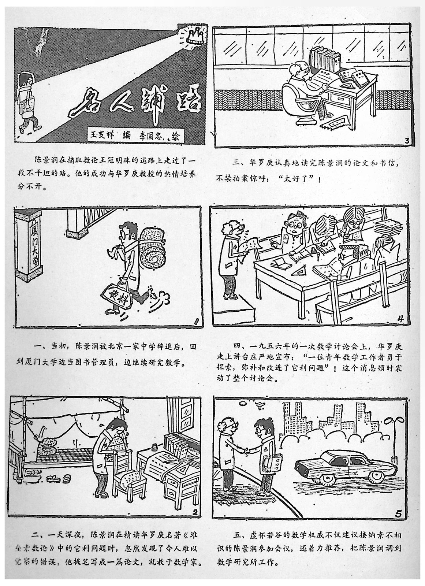

李国忠绘画；王变祥编文 《人事》1987年第2期（总第17期），封二
名人铺路
A Famous Man Paves the Way
- Panel text
- 陈景润在摘取数论王冠明珠的道路上走过了一段不平坦的路。他的成功与华罗庚教授的热情培养分不开。
Chen Jingrun's road to plucking the pearl from the crown of number theory was not a smooth one. His success was inseparable from Professor Hua Luogeng's warm-hearted cultivation. - 一、当初，陈景润被北京一家中学辞退后，回到厦门大学边当图书管理员，边继续研究数学。
1. At first, after being dismissed by a Beijing middle school, Chen Jingrun went back to Xiamen University, where he worked as a librarian while continuing his mathematical research. - 二、一天深夜，陈景润在精读华罗庚名著《堆垒素数论》中的它利问题时，忽然发现了令人难以觉察的错误，他提笔写成一篇论文，就教于数学家。
2. Late one night, while closely studying the Tarry problem in Hua Luogeng's celebrated book Additive Theory of Prime Numbers, Chen Jingrun suddenly noticed an error that was almost impossible to detect. He wrote it up as a paper and sent it to the mathematician for his opinion. - 三、华罗庚认真地读完陈景润的论文和书信，不禁拍案惊呼：“太好了”！
3. Hua Luogeng read Chen Jingrun's paper and letter carefully and could not help slapping the table: “Excellent!” - 四、一九五六年的一次数学讨论会上，华罗庚走上讲台庄严地宣布：“一位青年数学工作者勇于探索，弥补和改进了它利问题”！这个消息顿时震动了整个讨论会。
4. At a mathematics symposium in 1956, Hua Luogeng mounted the platform and solemnly announced: “A young mathematical worker has boldly explored, filled the gap in and improved upon the Tarry problem!” The news electrified the whole symposium. - 五、虚怀若谷的数学权威不仅建议接纳素不相识的陈景润参加会议，还着力推荐，把陈景润调到数学研究所工作。
5. The open-minded mathematical authority not only proposed that Chen Jingrun, whom he had never met, be invited to the meeting, but also strongly recommended him and had him transferred to work at the Institute of Mathematics.
- 陈景润在摘取数论王冠明珠的道路上走过了一段不平坦的路。他的成功与华罗庚教授的热情培养分不开。
- Description
- Picture story: the young Chen Jingrun, dismissed from a Beijing middle school and working as a librarian, finds an error in Hua Luogeng's book; Hua praises his paper publicly and has him transferred to the Institute of Mathematics.
- Note
- Chen Jingrun (1933–1996), later famous for his work on Goldbach's conjecture, was a national symbol of rescued talent in the 1980s. 名人铺路, “a famous man paves the road,” casts the senior scholar as patron.
- Artists
- Li Guozhong 李国忠 (drawn); Wang Bianxiang 王变祥 (text)
- Published in
- 《人事》1987年第2期（总第17期）, inside front cover
- Themes
- Talent and its neglect · Policy on intellectuals · Exemplary history · Picture stories (连环画)

Cite
Li Guozhong and Wang Bianxiang, “名人铺路” [A Famous Man Paves the Way], Renshi (Personnel) 《人事》, 1987, no. 2, inside front cover.